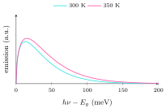

; output power , with
; output power , with  , where extraction is limited by total internal reflection (
, where extraction is limited by total internal reflection ( per face) and modulation bandwidth by the carrier lifetime, .
per face) and modulation bandwidth by the carrier lifetime, .Model
- Internal QE: (recombination). Double heterostructures and QWs raise carrier density in the active layer, favouring radiative
 .
. - Extraction: only rays inside the escape cone leave; the cone holds a fraction of isotropic emission, further reduced by Fresnel reflection : for GaAs (
 ) about per face (Holonyak and Bevacqua 1962). Domes, texturing, flip-chip and photonic crystals raise it to >80%.
) about per face (Holonyak and Bevacqua 1962). Domes, texturing, flip-chip and photonic crystals raise it to >80%. - Spectrum: emission , peak at , FWHM –: .
Derivation of the bandwidth
Small-signal current modulation drives the carrier density through : . The optical 3 dB bandwidth (optical power halves) is at , ; the electrical 3 dB bandwidth (detected electrical power halves) is at , .
Worked example
GaAs LED at 870 nm, mA, : mW. Linewidth meV → nm. With ns, MHz: fine for remote controls and short plastic-fibre links, too slow for Gb/s.
White LEDs
Blue InGaN LED (≈450 nm) + yellow YAG:Ce phosphor (Stokes loss ≈ 20%), or RGB chips (Nakamura et al. 1994). Luminous efficacy of white LEDs > 150 lm/W, vs 15 lm/W for incandescent. Droop: falls at high current (Auger, carrier leakage).
Picture: emission spectrum at two temperatures

Density of states times Boltzmann occupation: peak at above the gap, FWHM (47 meV at 300 K, 54 meV at 350 K); in a real device  itself also drops with temperature (LED efficiency and temperature).
itself also drops with temperature (LED efficiency and temperature).
Engineering applications
Solid-state lighting and displays (micro-LED), optocouplers, IR remote controls, short-reach plastic-optical-fibre links and Li-Fi, LED sources for OCT (SLEDs).
Exam-style exercise
An InGaAsP LED emits at 1310 nm at 300 K. (a) Linewidth in nm (take ). (b) At what temperature does it reach 120 nm? (c) Bare-chip extraction ( , one face) and the output at 100 mA with .
, one face) and the output at 100 mA with .
Solution
(a) µm nm. (b) : K. (c) Escape cone , : 2.1%, times Fresnel : 1.44%. V A mW: a dome or texturing is worth 10×.
Pitfall
External quantum efficiency (photons out per electron) is not wall-plug efficiency (optical power / electrical power): the latter includes the voltage across series resistance.